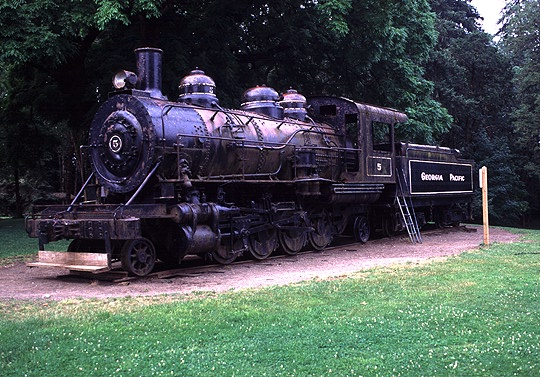

Last updated: 25 June, 2015
| Builder: | Baldwin Locomotive Works |
| Build #: | 55399 |
| Date: | 05/1922 |
| Engine #: | 5 |
| Railroad: | Georgia Pacific |
| Website: | www.website.com |
| Email: | emailaddress |
| Location: | Avery Park, 1310 SW Avery Park Drive. Corvallis, OR 97333S |
| GPS: | 44.553274, -123.270110 |
| Phone: | |
| Status: | Display |
| Notes: |
Georgia Pacific's 2-8-2 #5 is located in Avery park in Corvalis. Built by Baldwin in 1922 as #5 of the Brooks-Scanlon Lumber Co. of Bend, OR, it went to Georgia Pacific in 1956 before being donated to Corvalis in 1960. Generally, #5 appears to be in very good cosmetic condition. The extra handrails along the running boards were additions made during #5's conversion to park engine status.
| Class: | |
| Gauge: | 4'-8½" |
| F.M.Whyte: | 2-8-2 |
| Drivers: | 44 |
| Gear Ratio: | |
| Tractive Effort: | 28,600 |
| Weight: | 144,000 |
| Weight on Drivers: | 116,000 |
| Length: | |
| Boiler: | |
| Cylinders: | 18x24 |
| Top Speed: | |
| Fuel: | |
| Fuel Type: | Oil |
| Water: | |
| Steam psi: | 190 |